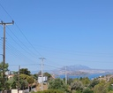
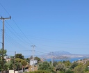

Ευκαιρία!! Πωλείται γωνιακό οικόπεδο 323τ.μ., εντός σχεδίου, οικοδομήσιμο. Χτίζει 120τ.μ. σε πολύ καλή θέση, στην περιοχή "Ξένο" Σαλαμίνας, σε ήσυχη γειτονιά, με την μία πρόσοψη επί της Λεωφ. Αγ. Νικολάου και δίπλα σε στάση λεωφορείου.
Απεριόριστη θέα και στη θάλασσα, από την οποία απέχει πέντε λεπτά, ενώ στον ίδιο χρόνο απέχει και η αγορά στο κέντρο της Σαλαμίνας. Εύκολη πρόσβαση με ευθεία και επίπεδη διαδρομή δέκα λεπτών από το πορθμείο Παλούκια και από το πορθμείο Φανερωμένης, για πρόσβαση στην εθνική οδό Αθηνών Κορίνθου.
Είναι κατάλληλο για μόνιμη κατοικία, εξοχικό και επένδυση.